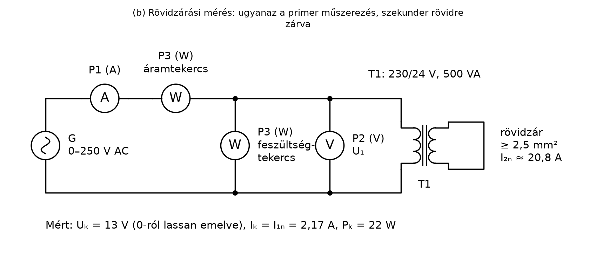
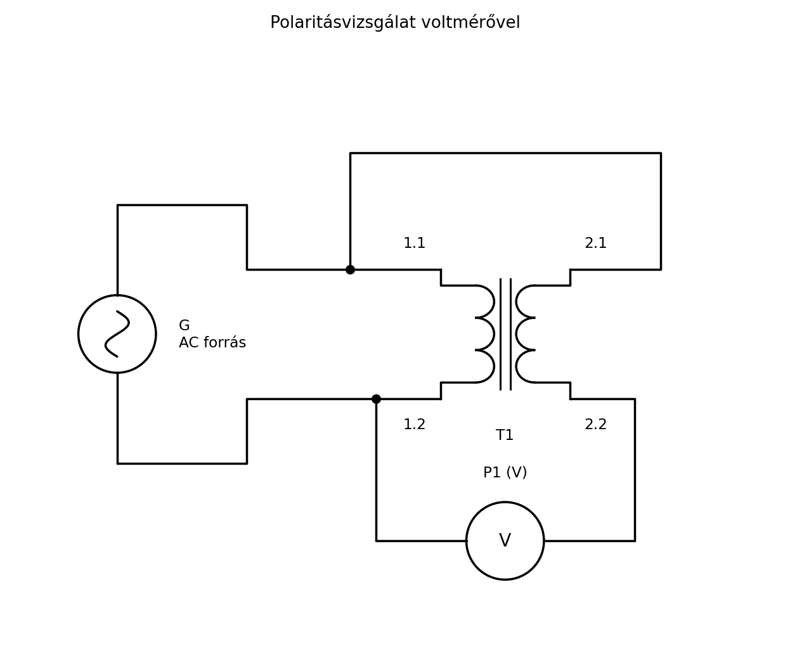
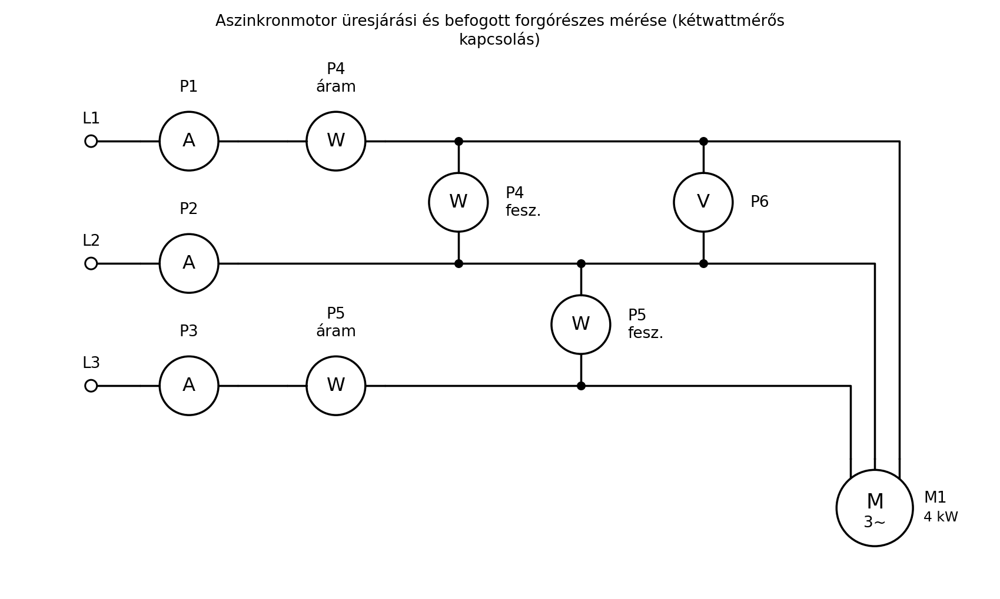

A szerelő gyakran találkozik olyan helyzettel, amikor egy transzformátort, motort vagy generátort nemcsak be kell kötni, hanem arról is meg kell győződni, hogy a gép belül egészséges, és a névleges adatai a valóságban is teljesülnek. Ilyen helyzet például:
A transzformátor és a villamos gép „adatlapnyi” jellemzői – üresjárási áram, vasveszteség, rövidzárási feszültség, tekercsveszteség, hatásfok, szigetelési ellenállás – méréssel ellenőrizhetők anélkül, hogy a gépet a névleges terheléssel kellene járatnunk. Ez a fejezet ezeket a mérési módszereket tanítja meg, a gyakorlati jegyzőkönyv elkészítésével együtt.
Képzeljünk el egy tanműhelyi mérőpadot. Rajta egy 230/24 V-os, 500 VA-es leválasztótranszformátor. A primer oldalra változtatható feszültségű váltakozó forrás, az áramkörbe ampermérő, a primer kapcsokra voltmérő és wattmérő van kötve. A mérést úgy kezdjük, hogy a szekunder oldal kapcsait nyitva hagyjuk. Amikor a primer feszültséget lassan 230 V-ra emeljük, a voltmérő a névleges feszültséget mutatja, az ampermérőn pedig egy kis, a névleges áramhoz képest néhány százalékos áramot olvasunk. Ez az üresjárási áram. A wattmérő néhány wattot mutat: ez a vasveszteség. Ha ezután a primer feszültséget nullára szabályozzuk és lekapcsoljuk, feszültségmentes állapotban a szekunder kapcsokat egy vastag, rövid vezetékkel összekötjük, majd a primer feszültséget nulláról csak annyira emeljük, hogy a névleges áram folyjon, a szükséges feszültség a névlegesnek csak néhány százaléka. Ez a rövidzárási feszültség. E két mérésből a transzformátor legfontosabb állapotjellemzői meghatározhatók.
A mérőpad elrendezését az alábbi ábra mutatja: az asztal szélén a vészleállító, mellette a szabályozható AC forrás (G), a polcon a P1 ampermérő és a P3 wattmérő, a padon a primer kapcsokra kötött P2 voltmérő, középen a T1 transzformátor, a szekunder oldalon pedig vagy a P4 voltmérő (üresjárás), vagy a szaggatottan rajzolt rövidzáró vezeték (rövidzárás). A folytonos vezetékek az áramutat (G L → P1 → P3 áramköre → T1 primer → G N), a szaggatottak a feszültségmérő ágakat jelölik; a kijelzők az üresjárási példa értékeit mutatják.
A P4 voltmérő és a rövidzáró vezeték soha nincs egyszerre a szekunderen: a két mérés között a forrást nullára tekerjük, kikapcsoljuk, és csak feszültségmentesen kötünk át. A wattmérő csillaggal jelölt kapcsai (I, U) a forrás felé néznek. A HTML-kiadásban az üresjárási és a rövidzárási elrendezés külön is megjeleníthető, a műszerekre mutatva a bekötésük magyarázata olvasható.
Biztonsági korlát. A feladat tanműhelyi környezetre vagy jogosult oktató felügyeletére vonatkozik; hálózati feszültségen önállóan ne végezd. A méréshez a berendezést feszültség alá kell helyezni, ezért a mérőkapcsolás összeállítása és átalakítása előtt mindig feszültségmentesíteni kell.
A feszültségmentesítés öt biztonsági szabálya a mérési gyakorlatban is kötelező:
A mérőműszerek kiválasztásánál ügyeljünk a mérési kategóriára (CAT) és a mérőzsinórok állapotára; a mérési határértékeket mindig a várt érték fölé állítsuk, és a mérőműszer bekötését feszültségmentes állapotban végezzük. A wattmérő feszültségtekercsét a mérendő feszültségre párhuzamosan, áramtekercsét az árammal sorbakötjük, a bekötési pontok jelöléseit pedig a gyártói adatlap szerint követjük.
Szemléltető ábra – az üresjárási és a rövidzárási mérés teljes mérőkapcsolása:

A két rajz primer oldala azonos: a szabályozható AC forrásról a P1 ampermérőn és a P3 wattmérő áramtekercsén át (sorosan) jut az áram a transzformátorhoz, a P3 feszültségtekercse és a P2 voltmérő pedig a primer kapcsokra (párhuzamosan) csatlakozik. A különbség a szekunder oldalon van: üresjárásban a kapcsok nyitottak, csak a P4 voltmérő méri -at; rövidzárásban egy vastag vezeték zárja rövidre a tekercset. A mérés közben a szekunder oldali rövidzáró vezetéket úgy kell méretezni, hogy a névleges szekunder áramot melegedés nélkül elviselje.

A statikus ábra bal fele az üresjárást mutatja: a feszültséggel közel arányosan, a négyzetével nő, és 230 V-on éri el a mért -t és -ot. A jobb fele a rövidzárást: már -nál folyik a névleges , a felvett teljesítmény ekkor . A HTML-változatban a mérési mód és a primer feszültség csúszkával állítható; rövidzárásban a 13 V fölé emelt feszültségre az oldal figyelmeztet.
Az üresjárási mérés célja a vasveszteség, az üresjárási áram és az áttétel meghatározása.
Szabály. Az üresjárási mérés során a szekunder kapcsokat nyitva hagyjuk, a primer oldalra pedig a névleges frekvenciájú, névleges feszültségű táplálást kapcsolunk. A primer oldalon mérjük az feszültséget, az üresjárási áramot és a üresjárási teljesítményt, a szekunder oldalon pedig az üresjárási feszültséget.
A mérési elrendezésben a wattmérő a primer oldali hatásos teljesítményt méri. Mivel a szekunder oldalon nincs terhelés, a felvett hatásos teljesítmény majdnem teljes egészében vasveszteség: . A tekercsveszteség itt elhanyagolható, mert az üresjárási áram kicsi.
Az üresjárási áram százalékos értéke:
ahol a primer névleges áram. Az üresjárási teljesítménytényező:
Az áttétel közelítő értéke üresjárásban:
A rövidzárási méréssel a névleges terheléshez tartozó tekercsveszteséget és a belső impedanciát határozzuk meg anélkül, hogy a transzformátort valódi terheléssel járatnánk.
Szabály. A rövidzárási mérés során a szekunder kapcsokat megfelelő keresztmetszetű vezetékkel rövidre zárjuk, a primer feszültséget pedig nulláról lassan addig emeljük, amíg a primer oldali áram eléri a névleges áramot. Az ehhez szükséges feszültség a rövidzárási feszültség, . Mérjük a primer feszültséget, a primer áramot és a felvett hatásos teljesítményt.
A mért hatásos teljesítmény ekkor a névleges áramhoz tartozó tekercsveszteség:
A rövidzárási feszültség százalékos értéke:
A rövidzárási impedancia a primer oldalra vonatkoztatva:
A rövidzárási ellenállás:
A rövidzárási reaktancia:
A mért vas- és tekercsveszteségből a hatásfok tetszőleges terhelésre kiszámítható. A Terhelés, hatásfok, veszteségek és kapcsolások alfejezetben tanult összefüggést használjuk:
Névleges terhelésnél a leadott hatásos teljesítmény .
Feszültségváltozás terheléskor. A rövidzárási mérésből a terhelt szekunder feszültség is becsülhető (részletesen: Terhelés, hatásfok, veszteségek és kapcsolások). A rövidzárási feszültség hatásos és meddő összetevője és ; névleges terhelésnél a százalékos feszültségváltozás közelítőleg
A tekercsellenállás mérése mindig feszültségmentes állapotban, a tekercsek kisütése után végezhető.
Szabály. A tekercsellenállást legegyszerűbben kalibrált ellenállásmérővel vagy a voltamper-módszerrel mérjük. A voltamper-módszer lényege: a tekercsre egyenáramot kapcsolunk, mérjük a rajt eső feszültséget és az áramot, majd az ellenállást Ohm törvényéből számítjuk:
Kis ellenállásoknál a mérőzsinór és az érintkezési ellenállások hibát okoznak, ezért célszerű négyvezetékes (Kelvin-) bekötést használni, ha a műszer támogatja (a bekötést a szigetelésmérésnél bemutatott ábra (d) része mutatja). A mért ellenállás függ a hőmérséklettől, ezért a mérési jegyzőkönyvben mindig fel kell tüntetni a tekercs hőmérsékletét.
Hőmérséklet-korrekció rézre:
ahol a hőmérséklet Celsius-fokban. A 235-ös érték rézre jellemző; más anyagnál a gyártói adatlapot kell követni (ellenőrizendő: anyagra vonatkozó hőmérsékleti tényező).
A szigetelési ellenállás mérése a gép vagy transzformátor szigetelésének állapotát jellemzi. A mérést egyenáramú, nagy belső ellenállású szigetelési ellenállásmérővel végezzük.
Szabály. A mérőfeszültséget a vizsgált berendezés névleges feszültségéhez kell választani. Kisfeszültségű gépeknél és transzformátoroknál jellemzően 500 V egyenfeszültséget használunk, magasabb névleges feszültségnél 1000 V-ot (ellenőrizendő: aktuális szabvány és gyártói adatlap). A mérés előtt a tekercseket ki kell sütni, mert a szigetelés kapacitása veszélyes töltést tárolhat.
Mérési pontok:
Az alábbi ábra (a)–(c) része a három szigetelésmérés bekötését mutatja: a mért tekercs két kapcsát összekötjük, a szigetelésmérő LINE kapcsa az egyik, az EARTH kapcsa a másik tekercsre vagy a transzformátor testére (PE-csavarjára) kerül. A (d) rész a tekercsellenállás négyvezetékes (Kelvin-) mérését mutatja: az áramvezetékek (I+, I−) és a feszültségérzékelők (U+, U−) külön csatlakoznak a kapcsokhoz, így a zsinór és az érintkezés ellenállása nem torzítja a kis ellenállás mérését.
A tekercsek kapcsainak összekötése a szigetelésmérésnél bevett gyakorlat (a műszer és a gyártó utasítása szerint ellenőrizendő); a mérés után minden tekercset kisütünk. A HTML-kiadásban a négy mérés egyenként lapozható.
Értékelés. A mért szigetelési ellenállásnak elegendően nagynak kell lennie. Kisfeszültségű berendezéseknél a gyakorlatban legalább 1 MΩ értéket tekintünk alsó határnak (ellenőrizendő: a vonatkozó termékszabvány és a gyártói előírás szerint). Új, jó állapotú gépeknél több száz MΩ vagy akár GΩ nagyságrendű érték is mérhető. Ha a mért érték alacsony, nedvesség, szennyeződés vagy szigeteléshiba állhat fenn.
Figyelem. A szigetelési ellenállás mérését soha ne végezd feszültség alatt, és a mérés után a vizsgált tekercseket rövidre zárva süsd ki, mielőtt megérintenéd.
Az áttétel legegyszerűbb ellenőrzése az üresjárási mérésből történik: a primer és szekunder oldali feszültség aránya megadja a menetszámáttételt. Egyfázisú transzformátornál:
Háromfázisú transzformátornál a mérést fázisfeszültségek vagy vonali feszültségek alapján is elvégezhetjük, de figyelni kell a kapcsolási csoportra. Csillag–delta kapcsolásnál a vonali feszültségek aránya nem egyenlő közvetlenül a menetszámáttétellel, mert a -as tényező is szerepel. Ezért mindig rögzítsük a kapcsolási jelet, és a mérést a gyártói adatlap szerint értékeljük. Egy 20/0,4 kV-os Dyn transzformátornál a vonali feszültségek aránya 50, a tekercsek menetszám-áttétele viszont kb. 86,6 – a levezetést a Háromfázisú transzformátor és kapcsolási csoportok alfejezet adja.
A kapcsolási csoport ellenőrzése voltmérővel. Feszültségmentes, minden oldalról leválasztott transzformátoron kösd össze az 1U és a 2U kapcsot, majd adj a nagyfeszültségű oldalra kis (példánkban 400 V-os), szimmetrikus háromfázisú próbafeszültséget – ez csak jogosult személy által, a vizsgálóhely szabályai szerint végezhető. Mérd meg az 1V–2V, 1V–2W, 1W–2V és 1W–2W feszültséget; 20/0,4 kV-os áttételnél a számított értékek (ideális transzformátor, azonos fázissorrend; ellenőrizendő: a vizsgálati előírás):
| Kapcsolási csoport | 1V–2V | 1V–2W | 1W–2V | 1W–2W |
|---|---|---|---|---|
| Yy0 | 392,0 V | 396,1 V | 396,1 V | 392,0 V |
| Dyn5 | 406,9 V | 406,9 V | 400,1 V | 406,9 V |
| Dyn11 | 393,1 V | 393,1 V | 400,1 V | 393,1 V |
A különbségek csak néhány voltosak, ezért stabil próbafeszültség és elegendő felbontású, kis hibahatárú műszer kell. Ha a mért mintázat nem egyezik az adattábla kapcsolási csoportjával, a transzformátort nem szabad párhuzamosan kapcsolni.
Szabály. Ha a mért üresjárási feszültségáttétel több mint néhány százalékkal eltér a névleges áttételtől, akkor menetszámhibára, rossz bekötésre vagy belső tekercszárlatra kell gyanakodni. A mérésnél a primer feszültséget a névleges értékre állítsuk, és mindkét oldalon azonos típusú műszerrel mérjünk.
Gyakorlat. Polaritásvizsgálat voltmérővel. Két szekundertekercses transzformátor (pl. 2 × 12 V vagy 2 × 115 V) soros vagy párhuzamos kötése, illetve egyfázisú egységekből épített háromfázisú egység előtt tudni kell, mely kapcsok azonos polaritásúak. Az öt biztonsági szabály szerint feszültségmentesített kapcsoláson kösd össze a primer egyik kapcsát (1.1) a szekunder egyik kapcsával (2.1), a voltmérőt pedig a két szabad kapocs (1.2 és 2.2) közé. Ezután a primerre felügyelettel, leválasztó forrásról csökkentett (vagy névleges) feszültséget kapcsolsz, és leolvasod a voltmérőt.

Névleges értékekkel (230 V primer, 24 V szekunder):
Az azonos polaritású kezdeteket jelöld ponttal vagy a kapocsjelöléssel. A műszer kategóriáját és méréshatárát a nagyobbik értékhez () válaszd.
Két szekundertekercs. Soros kötésben helyes polaritásnál mérhető a két szabad végen, fordítottnál közel 0 V. Párhuzamos kötés előtt ez a mérés kötelező: ellentétes polaritással párhuzamosítva a két tekercs egymást rövidre zárja, ami veszélyes túláramot és melegedést okoz.
Feladat (B). Egy 2 × 115 V-os szekundert sorba kötsz, és a két szabad végen 3,1 V-ot mérsz. Mi a hiba, és mi a teendő? (A megoldás a Megoldások végén.)
A forgógép legfontosabb „adatlapnyi” jellemzőit ugyanaz a két elv adja, mint a transzformátornál: üresjárási mérés névleges feszültségen és rövidzárási (befogott forgórészes) mérés csökkentett feszültségen. A mérés kizárólag jogosult oktató felügyeletével végezhető.
Biztonsági korlát. Bekötés és átkötés előtt az öt szabály: (1) lekapcsolás, (2) visszakapcsolás elleni biztosítás, (3) a feszültségmentesség ellenőrzése, (4) földelés és rövidre zárás, ha indokolt, (5) a szomszédos feszültség alatti részek lefedése. A motor teste PE-re kötött, a tengely és a tengelykapcsoló takart.
Mérőkapcsolás. Szabályozható háromfázisú forrás (toroid- vagy indukciós szabályozó), mindhárom fázisban ampermérő (vagy lakatfogó), voltmérő a vonali kapcsok között, és két wattmérős (Aron-) kapcsolás: a P4 áramtekercse az L1-ben, feszültségtekercse L1–L2 között, a P5 áramtekercse az L3-ban, feszültségtekercse L3–L2 között. A felvett teljesítmény a két kijelzés előjeles összege, (lásd Teljesítmény- és energiamérés, fogyasztásmérők). Háromfázisú teljesítménymérő a két wattmérőt kiváltja.

Üresjárási mérés (a 4 kW-os, 400 V Δ kapcsolású, 8,2 A névleges áramú motor, lásd Motor kapocsbekötése és beüzemelése; minden mért adat szemléltető példaadat). Terheletlen tengely, ; mért: , .
A tekercsveszteség üresjárásban Δ-kapcsolásnál a fázisárammal számolható: , (a tekercsellenállás-mérésből), így . A vas- és súrlódási (ventilációs) veszteség együtt . A kettő szétválasztása a feszültség fokozatos csökkentésével lehetséges; ez túlmutat a fejezeten. Kis mellett az egyik wattmérő negatív értéket mutat, ezért az előjelet is jegyezd fel.
Rövidzárási (befogott forgórészes) mérés. A forgórészt megfelelő szilárdságú rögzítővel mechanikusan megfogod, a feszültséget nulláról addig emeled, amíg a motor a névleges áramot veszi fel (). Mért: , .
A névleges feszültségre arányosan átszámított indítási áram ; ez az adatlap indítási áramarányával () vethető össze (a telítés miatt csak közelítés). Biztonság: csak néhány másodpercig mérj, mert az álló motor nem hűl; a rögzítés a fellépő nyomatékot biztosan tartsa; a mérés kizárólag felügyelettel végezhető (ellenőrizendő: gyártói és oktatói mérési utasítás).
Fordulatszám és szlip. Optikai vagy érintkezős fordulatszámmérővel, illetve stroboszkóppal mérsz. Példa: 1/min, 1/min:
A terhelés növelésével a szlip nő; az adattáblából számolt névleges szlippel vesd össze.
Értékelés. A három fázisáram eltérése legfeljebb néhány százalék; üresjárásban a kicsi (jellemzően 0,1–0,2); az indítási áramarány egyezzen az adatlappal. A jegyzőkönyvbe: , –, , , a számított , , , , a környezeti és tekercshőmérséklet, műszeradatok.
A mérési jegyzőkönyv célja, hogy a mérés körülményei és eredményei később is visszakövethetők legyenek. Üres transzformátor-mérési lap: Nyomtatható jegyzőkönyvek és sablonok, B2. A jegyzőkönyv minimális tartalma:
A mért értékeket mindig a mértékegységgel együtt, a számított értékeket pedig a felhasznált képletekkel együtt rögzítsük.
Minta: kitöltött mérési jegyzőkönyv. A mért adatok a fejezet példái; a szigetelési, ellenállás- és terhelési értékek szemléltető példaadatok.
Fejléc: T1 leválasztótranszformátor, 230/24 V, 500 VA, gyári szám: …; mérés helye, ideje: …; környezet 22 °C, 45 % RH. Műszerek (mindegyiknél típus, gyári szám, méréshatár, kalibrálás dátuma): P1 ampermérő, P2 és P4 voltmérő, P3 wattmérő, szigetelésmérő, mikroohmmérő. Kapcsolási vázlat: a fejezet (a) és (b) mérőkapcsolása.
| Mérés (feszültségmentes) | Mért érték | Értékelés |
|---|---|---|
| Szigetelés 500 V DC, 60 s: primer–szekunder | 850 MΩ | ≥ 1 MΩ (ellenőrizendő), M |
| primer–test | 620 MΩ | M |
| szekunder–test | 540 MΩ | M |
| Primer tekercsellenállás, 22 °C | 2,95 Ω | – |
| Szekunder tekercsellenállás, 22 °C (Kelvin) | 0,018 Ω | – |
| Primer, 75 °C-ra számítva: | 3,56 Ω | – |
| Mérés (feszültség alatt, felügyelt) | Mért érték | Számított érték |
|---|---|---|
| Üresjárás: / / / | 230 V / 0,15 A / 8 W / 24,6 V | ; ; ; W (1,6 %) |
| Rövidzárás: / / | 13 V / 2,17 A / 22 W | ; ; ; |
| Terhelési próba ohmos terheléssel: / | 20,8 A / 23,5 V | (egyezik a számítottal) |
| Hatásfok () | – | ; |
A szekunder ellenállás a primerre átszámítva () a primerrel együtt 4,52 Ω, kissé kisebb a váltakozó áramon mért -nál, ahogy várjuk (a járulékos veszteségek miatt) – ez a jegyzőkönyv belső ellenőrzése.
Értékelés: a transzformátor megfelel; a mért értékek a gyártói tartományon belül vannak (ellenőrizendő: adatlap). Mérést végezte, aláírás, dátum: …
Üres sablon (nyomtatható). Fejléc: berendezés …; gyári szám …; hely, idő …; környezet …; műszerek …
| Mérés | Mért érték | Számítás, értékelés |
|---|---|---|
| Szigetelés primer–szekunder | …… MΩ | |
| Szigetelés primer–test | …… MΩ | |
| Szigetelés szekunder–test | …… MΩ | |
| Primer ellenállás (…… °C) | …… Ω | 75 °C-on: …… Ω |
| Szekunder ellenállás (…… °C) | …… Ω | |
| Üresjárás / / / | …… / …… / …… / …… | , , : …… |
| Rövidzárás / / | …… / …… / …… | , , , : …… |
| Terhelés / | …… / …… | : …… |
| Hatásfok | – | : …… |
Értékelés: megfelel / nem felel meg. Aláírás: …
Hibák értelmezése:
Egy elosztótranszformátor felülvizsgálatánál a mérőcsoport az üresjárási áramot a névleges 2–3% helyett 9%-nak mérte. Az üresjárási veszteség is érezhetően, a korábbi mérés másfél-kétszeresére nőtt (a zárt menet köráramának vesztesége az üresjárási hatásos teljesítményben jelentkezik). A transzformátor terhelés alatt erősen melegedett, és halk búgó hangot adott. A szigetelési ellenállás mérése nem mutatott földzárlatot. A későbbi megbontásnál az egyik fázistekercsben menetzárlatot találtak. Az eset tanulsága: az üresjárási áram és az üresjárási veszteség együttes növekedése már korai jele lehet a menetzárlatnak, mielőtt a szigetelési ellenállás leromlana. A rövidzárási mérés és a tekercsellenállás mérése segített a hiba helyének szűkítésében.
Névleges feszültség rákapcsolása rövidre zárt szekunderre. A tanuló a rövidzárási mérésnél rögtön a névleges feszültséget kapcsolja a primerre. Ilyenkor a primer áram ; a példánkban , a névleges közel 18-szorosa, ami tönkreteheti a transzformátort és a műszereket. Helyes: a feszültséget mindig nulláról, lassan emeljük a névleges áramig.
A wattmérő téves bekötése. A wattmérő áramtekercsét párhuzamosan, feszültségtekercsét sorosan kötik. Ez a mérési eredményt meghamisítja, és a műszert is károsíthatja. Helyes: az áramtekercs a mérendő árammal sorba, a feszültségtekercs a mérendő feszültségre párhuzamosan kerül.
A szigetelési mérés feszültség alatt. A tanuló elfelejti feszültségmentesíteni a berendezést, és a szigetelési ellenállásmérővel feszültség alatti kapcsokhoz ér. Ez áramütést és a műszer tönkremenetelét okozhatja. Helyes: mindig a feszültségmentesítés öt szabályával kezdj, és a mérés után süsd ki a tekercseket.
A tekercsellenállás mérésénél a zsinórellenállás figyelmen kívül hagyása. Kis ellenállású tekercsnél (pl. 0,1 Ω alatt) a mérőzsinór ellenállása jelentős hibát okoz. Helyes: használj négyvezetékes mérést, vagy a mért értékből vond le a zsinór ellenállását.
A hőmérséklet-korrekció elhagyása. A hideg tekercsen mért ellenállást meleg állapotra való átszámítás nélkül használják a veszteségszámításhoz. Helyes: a mért hőmérsékletet és a korrekciós képletet mindig alkalmazd.
Hiányos jegyzőkönyv. Csak a mért értékeket írják fel, a körülményeket és a műszeradatokat nem. Később nem lehet megítélni, hogy a mérés reprodukálható-e. Helyes: a jegyzőkönyv minden lényeges adatot tartalmazzon.
Gyakorlás: ennek az alfejezetnek a kidolgozott példái, gyakorlatai és megoldással ellátott feladatai az Összefoglaló feladatgyűjtemény villanyszerelő tanulóknak című kötet 41.3 szakaszában találhatók.
Az üresjárási és rövidzárási mérés együtt a transzformátor legfontosabb állapotjellemzőit adja anélkül, hogy a gépet névleges terheléssel kellene járatni. Az üresjárási mérésből a vasveszteség, az üresjárási áram és az áttétel, a rövidzárási mérésből a tekercsveszteség, a rövidzárási feszültség és a belső impedancia határozható meg. A hatásfok a mért veszteségekből a képlettel számítható. A tekercsellenállást feszültségmentes állapotban, Ohm törvénye alapján mérjük, és a hőmérséklet-korrekciót alkalmazzuk. A szigetelési ellenállást egyenfeszültségű műszerrel mérjük, és a mért értéket a gyártói vagy szabványos határértékkel hasonlítjuk össze. A mérési jegyzőkönyvben a mért adatok, a műszeradatok, a környezeti feltételek és a számítások egyaránt szerepelnek. Továbbvitt eredmény. A mérési jegyzőkönyv felépítése, a műszerbiztonsági szabályok és a számítási gyakorlat közvetlenül felhasználható a(z) Alapmérések gyakorlata: feszültség, áram, ellenállás, teljesítmény alfejezetben.
A leírt fizikai összefüggések és mérési elvek a klasszikus elektrotechnikai alapokból származnak, és nem igényelnek külön forrásellenőrzést. A konkrét határértékek (szigetelési ellenállás alsó határa, mérőfeszültség, üresjárási áram tipikus tartománya, rövidzárási feszültség tipikus tartománya) a gyártói adatlapoktól és a vonatkozó termékszabványoktól függnek, ezért ezeket a szövegben jelöltem (ellenőrizendő). A szigetelési ellenállás mérőműszerekre vonatkozó szabvány: MSZ EN 61557 (ellenőrizendő: aktuális kiadás). A transzformátorok mérési módszereit a termékszabványok, például az MSZ EN 60076 sorozat írja le (ellenőrizendő: aktuális kiadás).